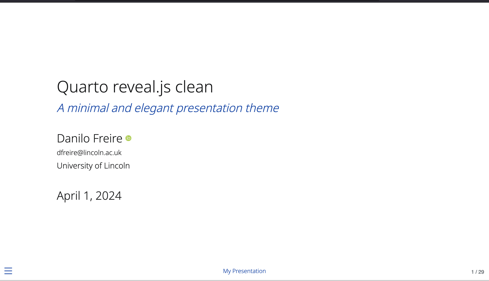

A minimal and elegant reveal.js presentation theme for Quarto. This is a personal fork of Grant McDermott's clean theme, with a few small tweaks to colours, fonts, and extensions.

Open the interactive slides → · use the arrow keys to move through them
What this fork changes
Adjusted colour scheme
A deep blue accent and a near-black body colour, tuned for projector and screen contrast.
Different fonts
Font choices changed for clearer reading at a distance, while keeping the theme's calm feel.
More transitions
Extra slide transition options, so you can match the motion to the talk.
Extra extensions
Bundled plugins beyond the original theme: a code drop console, appearance animations, and multimodal media.
Installation
Add the theme to a Quarto project in one command.
quarto install extension danilofreire/quarto-presentationThe demo also uses three extra extensions. Install the ones you need:
quarto install extension r-wasm/quarto-drop
quarto install extension martinomagnifico/quarto-appearance
quarto install extension martinomagnifico/quarto-multimodalThen set the format in your presentation’s YAML header and render:
format: clean-revealjsFor more on custom themes, see the Quarto presentations documentation.
Credits
This theme stands on other people’s work, and the credit belongs to them:
- Grant McDermott designed and built the original Quarto clean theme.
- Martijn de Jongh made Appearance and Multimodal.
- The R for WebAssembly team made Quarto Drop.
- The Quarto team built the tool that ties it all together.
Licence
This fork uses the same licence as the original theme: the MIT licence. You are free to use and adapt it; please keep the copyright notice for both Grant McDermott and the modifications